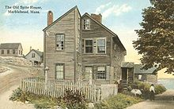
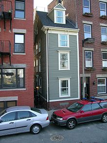
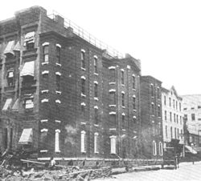
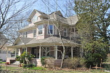
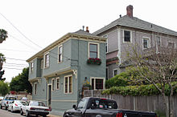
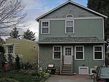

⊕ The Old Spite House of Marblehead ⊕

The Old Spite House of Marblehead, Massachusetts in 1912
In 1716, Thomas Wood, a sailmaker, built a home in Marblehead, Massachusetts which subsequently received the sobriquet of The Old Spite House. One theory has it that it was inhabited by two brothers who occupied different sections, would not speak to each other, and refused (out of spite) to sell to the other. In another explanation for the presently occupied ten-foot (3 m) wide home, which is just tall enough to block the view of two other houses on Orne Street, the builder was upset about his tiny share of his father's estate and his revenge was a house built to spite his older brothers' views. The Old Spite House is still standing and occupied.
⊕ The McCobb Spite House ⊕

The McCobb Spite House at Deadman's Point in July 1960.
In 1806, Thomas McCobb, heir to his father's Phippsburg, Maine land and shipbuilding business, returned home from sea to discover that his stepbrother Mark had inherited the family "Mansion in the Wilderness".Upset about his loss, McCobb built a home directly across from the McCobb mansion to spite his stepbrother. The National Park Service's Historic American Buildings Survey photographed and documented the 1925 move of the McCobb Spite House by barge from Phippsburg to Deadman's Point in Rockport, Maine.
⊕ The Tyler Spite House ⊕

The Tyler Spite House in Frederick, Maryland, located at the southern terminus of Record Street
In 1814, Dr. John Tyler, an eminent ophthalmologist and the first American-born physician to perform a cataract operation, owned a parcel of land near the courthouse square in Frederick, Maryland. The city made plans to extend Record Street south through Tyler's land to meet West Patrick Street. In fighting the city, Tyler discovered a local law that prevented the building of a road if work was in progress on a substantial building in the path of a proposed road. To spite the city, Tyler immediately had workmen pour a building foundation, which was discovered by the road crews the next morning.
In fighting the city, Tyler discovered a local law that prevented the building of a road if work was in progress on a substantial building in the path of a proposed road.
⊕ John Hollensbury's Home ⊕
In 1830, John Hollensbury's home in Alexandria, Virginia was one of two homes directly bordering an alleyway which received an annoying amount of horse-drawn wagon traffic and loiterers. To prevent people from using the alleyway, Hollensbury constructed a 7-foot (2.1 m) wide, 25-foot (7.6 m) deep, 325-square-foot (30.2 m2), two-story home using the existing brick walls of the adjacent homes for the sides of the new home. The brick walls of the Hollensbury Spite House living room have gouges from wagon-wheel hubs, and the house is still standing and occupied.
⊕ The Skinny House ⊕

The Skinny House in the North End of Boston, Massachusetts is an extremely narrow four-story spite house reported by The Boston Globe as having the "uncontested distinction of being the narrowest house in Boston".
In 1874, two brothers in the North End of Boston, Massachusetts got into a dispute. Each had previously inherited land from their deceased father. While the second brother was away serving in the military, the first brother built a large home, leaving the soldier only a shred of property that the first brother felt certain was too tiny to build on. When the soldier returned, he found his inheritance depleted and built a wooden house at 44 Hull St. to spite his brother by blocking the sunlight and ruining his view. The outside of the house spans 10.4 feet (3.2 m) and tapers to 9.25 feet (2.82 m) in the rear. The Skinny House is still standing and occupied. The Skinny House is an extremely narrow four-story spite house reported by The Boston Globe as having the "uncontested distinction of being the narrowest house in Boston".
⊕ In Literature ⊕
In 1839 or 1840, Edgar Allan Poe, in his story "The Business Man", wrote the following humorous passage in the voice of Peter Proffit, a man who imagines himself a legitimate businessman although the reader realizes that he is a con man. Proffit's attempted scam in this passage is to build a spite house and extort his neighbors to pay him to tear it down. (He calls this line of business 'the Eye-Sore trade'.) "Whenever a rich old hunks, or prodigal heir, or bankrupt corporation, gets into the notion of putting up a palace, there is no such thing in the world as stopping either of them, and this every intelligent person knows. The fact in question is indeed the basis of the Eye-Sore trade. As soon, therefore, as a building project is fairly afoot by one of these parties, we merchants secure a nice corner of the lot in contemplation, or a prime little situation just adjoining or tight in front. This done, we wait until the palace is half-way up, and then we pay some tasty architect to run us up an ornamental mud hovel, right against it; or a Down-East or Dutch Pagoda, or a pig-sty, or an ingenious little bit of fancy work, either Esquimau, Kickapoo, or Hottentot. Of course, we can't afford to take these structures down under a bonus of five hundred per cent. upon the prime cost of our lot and plaster. Can we? I ask the question. I ask it of business men. It would be irrational to suppose that we can. And yet there was a rascally corporation which asked me to do this very thing – this very thing! I did not reply to their absurd proposition, of course; but I felt it a duty to go that same night, and lamp-black the whole of their palace. For this, the unreasonable villains clapped me into jail; and the gentlemen of the Eye-Sore trade could not well avoid cutting my connection when I came out."
“Whenever a rich old hunks, or prodigal heir, or bankrupt corporation, gets into the notion of putting up a palace, there is no such thing in the world as stopping either of them, and this every intelligent person knows."
⊕ Shilling's House ⊕
In 1880, Adam Schilling owned a tract of 80 acres (32 ha) adjoining the town of Hiawatha, Kansas. Schilling sold three-quarters of an acre of this land, on which a house eventually was built and became owned by James Falloon. Together, the 80 acres (320,000 m2) were well-suited to be added to the town of Hiawatha, but Falloon refused to sell Schilling his three-quarters of an acre at the low price offered by Schilling. To spite his neighbor, Schilling then built a cheap tenement house on his own property 13 feet (4.0 m) from Falloon's with the "oppressive and unlawful idea of rendering Falloon's home obnoxious and unendurable to Falloon and family" by renting to people whom Falloon might find objectionable.
⊕ The Richardson Spite House ⊕

The Richardson Spite House in 1895
The Richardson Spite Housewas built in 1882 and demolished in 1915. It was four stories tall, 104 feet (31.7 m) wide, and only five feet (1.5 m) deep. Joseph Richardson, the owner of the plot, built it after the owner of an adjacent plot, Hyman Sarner, unsuccessfully tried to purchase the land. Sarner considered the plot useless by itself and offered only $1000; Richardson demanded $5000. After the deal fell through, Richardson had an apartment building constructed on his land. It was a functional (albeit impractical) apartment building with eight suites, each consisting of three rooms and a bath.
⊕ Salem Spite House ⊕
Before 1898, a home was erected in Salem, Massachusetts to "cut off the view of a neighbor". After the owner died, his heirs agreed in 1898 to have the Salem Spite House torn down to avoid a "vexatious lawsuit with the obnoxious neighbor".
⊕ Buthcer's Spite House ⊕
In the 19th century, a Collinsville, Connecticut butcher feuded with his neighbor. To spite his neighbor, the butcher built between their adjoining houses a narrow, two-story structure with windows covered by Venetian blinds. The wooden building located between 23 and 25 River St. was the width of a standard stairway and allowed the butcher to block the sun to the neighbor's home and block the neighbor's view of the butcher's property at will. The butcher's son got along with the family next door and eventually tore down the Collinsville Spite House.
⊕ John Randall's Freeport Spite House ⊕

Developer John Randall's unusual "Freeport Spite House" or "Miracle House" blocked a rival developer's plan for the route of Freeport, New York's Lena Avenue.
Also in the 19th century, a Freeport, New York developer who opposed all of Freeport being laid out in a grid, put up a Victorian house virtually overnight on a triangular plot at the corner of Lena Avenue and Wilson Place to spite the grid designers. The Freeport Spite House is still standing and occupied.
⊕ The Alameda Spite House ⊕

The Alameda Spite House, July 2008
At the turn of the 20th century, the city of Alameda, California took a large portion of Charles Froling's land to build a street. Froling had planned to build his dream house on the plot of land he received through inheritance. To spite the city and an unsympathetic neighbor, Froling built a house 10 feet (3.0 m) deep, 54 feet (16 m) long and 20 feet (6.1 m) high on the tiny strip of land left to him. The Alameda Spite House is still standing and occupied.
⊕ The Edleston Spite House ⊕
In 1904, the family of a deceased Joseph Edleston owned a plot of land next to the churchyard of St. Mary's in Gainford, England. The children asked to erect a monument in the churchyard in memory of Joseph's 41-year tenure at the church. The church refused permission, asserting that the churchyard was full but that the family could donate their land to the church and then build a monument on part of it. Feeling slighted, the family immediately set about building themselves a house on their land with a 40-foot (12 m) column erected next to the churchyard so it towered over the trees. The Edleston Spite House is still standing and occupied, and has MCMIV (1904) over the front door.
⊕ O'Reilly Spite House ⊕

O'Reilly Spite House, West Cambridge, MA, June 2009
In 1908, Francis O'Reilly owned an investment parcel of land in West Cambridge, Massachusetts and approached his abutting land neighbor to sell the land for a gain. After the neighbor refused to buy the land, O'Reilly built a 308-square-foot (28.6 m2) building, measuring 37 feet (11 m) long and only 8 feet (2.4 m) wide to spite the neighbor. The O'Reilly Spite House is still standing and is occupied by an interior decorating firm as of mid-2009.
⊕ The Sarajevo Spite House ⊕
Before 1914, the Austro-Hungarians who ruled Sarajevo in Bosnia and Herzegovina wanted land in the Sarajevo Old Town district to build a city hall and library. The land had a home on it and, despite offering the owner money, he refused and continued to refuse even when told that he had to move. When the officials threatened him, he moved the house and rebuilt it, piece by piece, on the other side of the Miljacka river, as a way of spiting the officials. The Sarajevo Spite House operates today as a restaurant called "Inat Kuća" (which means "Spite House").
⊕ Montlake Spite House ⊕

Alley view: the thin end of the Montlake Spite House (left) and the house it blocks from 24th.
In 1925, a Montlake, Seattle, Washington neighbor made an insultingly low offer for a tiny slice of adjoining land. Out of spite for the low offer, the builder built an 860-square-foot (80 m2) house which blocked the neighbors' open space. The house is 55 inches (1.4 m) wide at the south end, and 15 feet (4.6 m) wide at the north end. The Montlake Spite House is still standing and occupied.
⊕ The Virginia City Spite House ⊕
In the 1950s, two Virginia City, Nevada neighbors got into a dispute. When one of the men built a new house, the other bought the lot next to it and built a house less than 12 inches (30 cm) from his neighbor's house in spite to deprive the neighbor of both view and breeze. The Virginia City Spite House is still standing and occupied.
⊕ Sunrise Spite House ⊕
In 1985, a Sunrise, Florida homeowner painted his home hot pink and passionate purple to spite the city, which had given him several tickets for parking his glass company vans overnight in front of his home, in violation of a city code related to residential night parking of commercial vehicles. Characterized as a spite house painted in retaliation against the city, the pink and purple paint job was deemed "the owner permitting graffiti or other inscribed materials to remain" and likely violate the Sunrise city code section prohibiting eyesores that also were public nuisances.
⊕ The Pig House ⊕
A resident in the inland City of Toowoomba, Australia had his application to make his house double story denied. In protest against the Regional Council he painted his house pink and adorned it with various pig apparel including nose and tail. The house then became known as "The Pig House." After losing an appeal to the Council, the enraged owner then purchased three scrap cars and positioned them like slanted obelisks in his lawn. The house, positioned on a busy street in the city across from the main park, attracted a lot of attention to the matter.
In protest against the Regional Council he painted his house pink and adorned it with various pig apparel including nose and tail.
⊕ The Sam Kee Building ⊕
The city widened the street and took a large part of Mr. Kee's land who then built a 4' 11" wide building on the remaining very small parcel of land.
⊕ Lubbock Spite House ⊕
In 2001 in the city of Lubbock, Texas, a landlord and his four Texas Tech University student tenants were cited for violating a city ordinance that prohibited more than 2 unrelated people living together. The four men were sharing the house to save money on rent. In protest over the next few years, the house was painted several times in bright colors, each iteration even more bold than the last, culminating in purple with black and yellow polka dots (some with smiley faces) and bright green trim.
⊕ Pike's Spite House ⊕
In 2003, Stan Pike was denied a request to build a rounded porch on a house he owned in Avondale Estates, Georgia by the local Historic Preservation Commission. In protest of what he considered an unfair decision, he painted the house a bright green color, with purple dots.
⊕ Chauncey Hill Spite House ⊕
In 2009, West Lafayette, Indiana city inspectors informed a property manager that a Chauncey Hill dwelling needed "aesthetic improvements." In response, the manager asked the lessees to paint the house bright pink, as there were no city codes governing paint shades for houses.
⊕ Jackson's Spite House ⊕
In 2013, Aaron Jackson – an LGBT rights advocate and founder of Planting Peace – purchased a home across the street from the Westboro Baptist Church, a church widely known for its anti-LGBT viewpoints and protests. After accidentally discovering the home was for sale while looking at the church with Google Maps, he immediately decided to purchase it and paint it colors similar to the rainbow flag. Jackson noted the popularity of the house to tourists stating "usually people come here to check out the Church, now the attention is on this house."